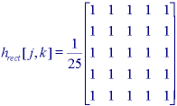
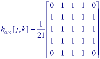
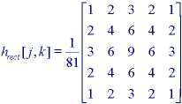
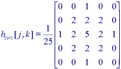
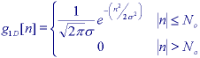
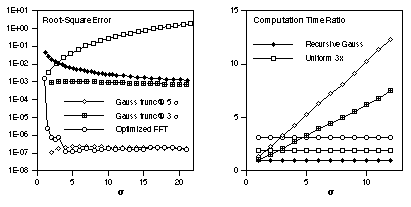
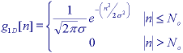
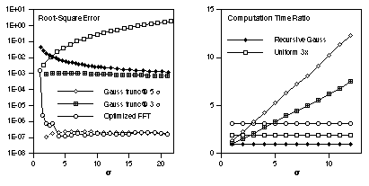

These algorithms are applied in order to reduce noise and/or to
prepare images for further processing such as segmentation.
We distinguish between linear and non- linear algorithms where the former are amenable to
analysis in the Fourier domain and the latter are not. We also distinguish
between implementations based on a rectangular support for the filter and
implementations based on a circular support for the filter.
Linear Filters
Several filtering algorithms will be presented together with the most useful supports.
* Uniform filter -
The output image is based on a local averaging of the input filter where all of
the values within the filter support have the same weight.
In the continuous spatial domain (x,y) the PSF and
transfer function are given in Table 4-T.1 for the rectangular case and
in Table 4-T.3 for the circular (pill box) case.
For the discrete spatial domain [m,n] the filter values
are the samples of the continuous domain case.
Examples for the rectangular case (J=K=5) and the circular
case (R=2.5) are shown in Figure 26.


(a) Rectangular filter (J=K=5) (b) Circular filter (R=2.5)
Figure 26 : Uniform filters for image smoothing
Note that in both cases the filter is normalized so that Σh[j,k]=1
This is done so that if the input a[m,n] is a constant then the output image c[m,n] is the same constant.
The justification can be found in the Fourier transform property described in eq. .
As can be seen from Table 4, both of these filters have transfer functions
that have negative lobes and can, therefore, lead to phase reversal as seen in Figure 23.
The square implementation of the filter is separable and incremental; the circular
implementation is incremental .
* Triangular filter -
The output image is based on a local averagingo f the input filter where the values within the filter
support have differing weights.
In general, the filter can be seen as the convolution of two (identical) uniform filters either rectangular
or circular and this has direct consequences for the computational complexity . (See Table 13.)
In the continuous spatial domain the PSF and transfer function are given in Table 4-T.2
for the rectangular support case and in Table 4-T.4 for the circular (pill box) support case.
As seen in Table 4 the transfer functions of these filters do not have negative lobes and
thus do not exhibit phase reversal.
Examples for the rectangular support case (J=K=5) and the
circular support case (R=2.5) are shown in Figure 27.
The filter is again normalized so that Σ[j,k]=1.
 
(a) Pyramidal filter (J=K=5) (b) Cone filter (R=2.5)
Figure 27: Triangular filters for image smoothing
* Gaussian filter -
The use of the Gaussian kernel for smoothing hasbecome extremely popular.
This has to do with certain properties of the Gaussian
(e.g. the central limit theorem, minimum space-bandwidth product) as well as
several application areas such as edge finding and scale space analysis.
The PSF and transfer function for the continuous space Gaussian are
given in Table 4-T6. The Gaussian filter is separable:
 There are four distinct ways to implement the Gaussian:
- Convolution using a finite number of samples (No) of the
Gaussian as the convolution kernel. It is common to choose No=⌈3σ⌉ or ⌈5σ⌉.

- Repetitive convolution using a uniform filter as the convolution kernel.
g1D[n] ≈ u[n]⊗u[n]⊗u[n]
u[n] = ｛1/(2N0+1) |n|≤N0
｛0 |n|>N0
The actual implementation (in each dimension) is usually of the form:
c[n] = ((a[n]⊗u[n])⊗u[n])⊗u[n]
This implementation makes use of the approximation afforded by the central limit theorem.
For a desired σ with eq. , we use No=⌈σ⌉
although this severely restricts our choice of σ's to integer values.
- Multiplication in the frequency domain.
As the Fourier transform of a Gaussian is a Gaussian (see Table -T.6),
this means that it is straightforward to prepare a filter ( Ω, Ψ) = G2D( Ω, Ψ) for use with eq. .
To avoid truncation effects in the frequency domain due to the infinite extent of the Gaussian
it is important to choose a σ that is sufficiently large.
Choosing σ> k/π where k = 3 or 4 will usually be sufficient.
- Use of a recursive filter implementation.
A recursive filter has an infinite impulse response and thus an infinite support.
The separable Gaussian filter can also be implemented by
applying the following recipe in each dimension when σ ≥ 0.5.
i) Choose the σ based on the desired goal of the filtering;
ii) Determine the parameter q based on eq. ;
iii) Use eq. to determine the filter coefficients {b0,b1,b2,b3,B};
iv) Apply the forward difference equation, eq. ;
v) Apply the backward difference equation, eq. ;
The relation between the desired σ and q is given by:
q = {0.98711σ-0.96330 σ≥2.5
{3.97156-4.14554√(1-0.26891σ) 0.5≤σ≤2.5
The filter coefficients {b0,b1,b2,b3,B} are defined by:
b0 = 1.57825 + (2.44413q) + (1.4281q2) + (0.422205q3)
b1 = (2.44413q) + (2.85619q2) + (1.26661q3)
b2 = -(1.4281q2) - (1.26661q3)
b3 = 0.422205q3
B = 1- (b1 + b2 + b3)/b0
The one-dimensional forward difference equation takes an input row (or column) a[n]
and produces an intermediate output result w<[>n] given by:
w[n] = Ba[n]+(b1w[n-1]+b2q[n-2]+b3w[n-3])/b0
The one-dimensional backward difference equation takes the intermediate result w[n] and
produces the output c[n] given by:
c[n] = Bw[n]+(b1c[n+1]+b2c[n+2]+b3c[n-3])/b0
The forward equation is applied from n = 0 up to n =N - 1
while the backward equation is applied from n = N - 1 down to n = 0.
The relative performance of these various implementation of the Gaussian filter can be described as follows.
Using the root-square error
between a true, infinite-extent Gaussian, g[n]σ,
and an approximated Gaussian, h[n], as a measure of accuracy, the
various algorithms described above give the results shown in Figure. 28a. The
relative speed of the various algorithms in shown in Figure 28b.
The root-square error measure is extremely conservative and thus all filters,
with the exception of "Uniform 3x" for large σ, are sufficiently accurate.
The recursive implementation is the fastest independent of σ;
the other implementations can be significantly slower.
The FFT implementation, for example, is 3.1 times slower for N=256 .
Further, the FFT requires that N be a highly composite number.

There are four distinct ways to implement the Gaussian:
- Convolution using a finite number of samples (No) of the
Gaussian as the convolution kernel. It is common to choose No=⌈3σ⌉ or ⌈5σ⌉.

- Repetitive convolution using a uniform filter as the convolution kernel.
g1D[n] ≈ u[n]⊗u[n]⊗u[n]
u[n] = ｛1/(2N0+1) |n|≤N0
｛0 |n|>N0
The actual implementation (in each dimension) is usually of the form:
c[n] = ((a[n]⊗u[n])⊗u[n])⊗u[n]
This implementation makes use of the approximation afforded by the central limit theorem.
For a desired σ with eq. , we use No=⌈σ⌉
although this severely restricts our choice of σ's to integer values.
- Multiplication in the frequency domain.
As the Fourier transform of a Gaussian is a Gaussian (see Table -T.6),
this means that it is straightforward to prepare a filter ( Ω, Ψ) = G2D( Ω, Ψ) for use with eq. .
To avoid truncation effects in the frequency domain due to the infinite extent of the Gaussian
it is important to choose a σ that is sufficiently large.
Choosing σ> k/π where k = 3 or 4 will usually be sufficient.
- Use of a recursive filter implementation.
A recursive filter has an infinite impulse response and thus an infinite support.
The separable Gaussian filter can also be implemented by
applying the following recipe in each dimension when σ ≥ 0.5.
i) Choose the σ based on the desired goal of the filtering;
ii) Determine the parameter q based on eq. ;
iii) Use eq. to determine the filter coefficients {b0,b1,b2,b3,B};
iv) Apply the forward difference equation, eq. ;
v) Apply the backward difference equation, eq. ;
The relation between the desired σ and q is given by:
q = {0.98711σ-0.96330 σ≥2.5
{3.97156-4.14554√(1-0.26891σ) 0.5≤σ≤2.5
The filter coefficients {b0,b1,b2,b3,B} are defined by:
b0 = 1.57825 + (2.44413q) + (1.4281q2) + (0.422205q3)
b1 = (2.44413q) + (2.85619q2) + (1.26661q3)
b2 = -(1.4281q2) - (1.26661q3)
b3 = 0.422205q3
B = 1- (b1 + b2 + b3)/b0
The one-dimensional forward difference equation takes an input row (or column) a[n]
and produces an intermediate output result w<[>n] given by:
w[n] = Ba[n]+(b1w[n-1]+b2q[n-2]+b3w[n-3])/b0
The one-dimensional backward difference equation takes the intermediate result w[n] and
produces the output c[n] given by:
c[n] = Bw[n]+(b1c[n+1]+b2c[n+2]+b3c[n-3])/b0
The forward equation is applied from n = 0 up to n =N - 1
while the backward equation is applied from n = N - 1 down to n = 0.
The relative performance of these various implementation of the Gaussian filter can be described as follows.
Using the root-square error
between a true, infinite-extent Gaussian, g[n]σ,
and an approximated Gaussian, h[n], as a measure of accuracy, the
various algorithms described above give the results shown in Figure. 28a. The
relative speed of the various algorithms in shown in Figure 28b.
The root-square error measure is extremely conservative and thus all filters,
with the exception of "Uniform 3x" for large σ, are sufficiently accurate.
The recursive implementation is the fastest independent of σ;
the other implementations can be significantly slower.
The FFT implementation, for example, is 3.1 times slower for N=256 .
Further, the FFT requires that N be a highly composite number.

a) Accuracy comparison b) Speed comparison
Figure 28: Comparison of various Gaussian algorithms with
N=256. The legend is spread across both graph
* Other -
The Fourier domain approach offers the opportunity to implement a variety of smoothing algorithms.
The smoothing filters will then be lowpass filters.
In general it is desirable to use a low pass filter
that has zero phase so as not to produce phase distortion
when filtering the image. The importance of phase was illustrated in Figures 5 and 23.
When the frequency domain characteristics can be represented in an analytic form,
then this can lead to relatively straightforward implementations of (Ω , Ψ).
Possible candidates include the lowpass filters "Airy" and "Exponential Decay"
found in Table 4-T.5 and Table 4-T.8, respectively.